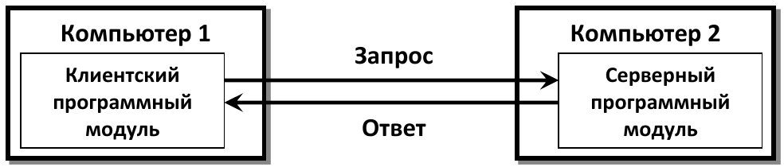
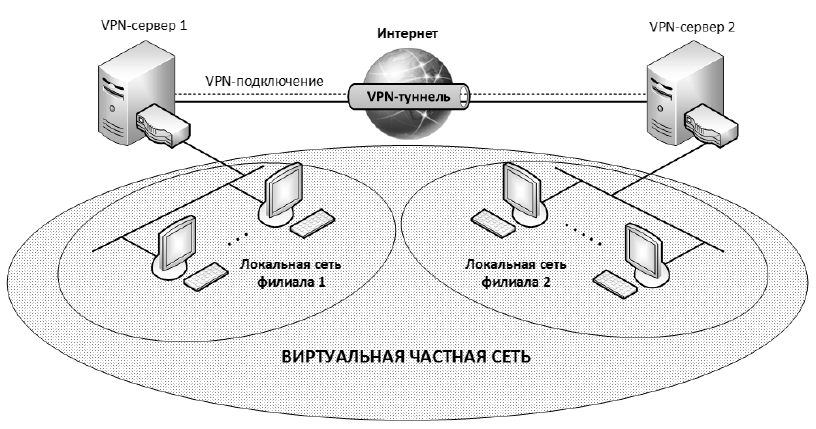
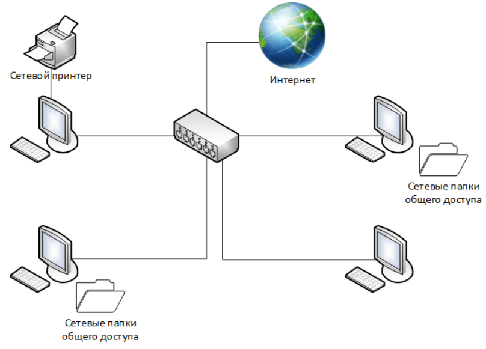

Общие принципы построения
Компьютерная сеть — физически соединеные (проводным или беспроводном способом) двух
или более компьютеров для передачи данных между ними.
Главной целью объединения вычислительных устройств в сеть
является удаленный доступ к разделяемым ресурсам: пользователи компьютеров, подключенных к
сети, или приложения, выполняемые на этих компьютерах, получают возможность доступа к
разнообразным ресурсам других компьютеров сети, находящихся на расстоянии.
Сервера — компьютеры, ресурсы которых должны быть доступны всем пользователям
сети.Клиенты — компьютеры, которые хотят получать доступ к ресурсам других компьютеров.

В терминах Интернет-технологий компьютеры (клиенты и серверы) подключенные к Интернету
называют конечными узлами или хостами .
Классификация компьютерных сетей
По среде передачи данных:
По скорости передачи данных:
низкоскоростные
среднескоростные
высокоскоростные
по размеру охваченной территории:
глобальные
региональные
локальные сети
Глобальные сети (Wide Area Networks, WAN) объединяют компьютеры,
находящиеся на больших расстояниях друг от друга: в различных городах, в
разных странах и на разных континентах. Глобальные сети могут объединять
как отдельные компьютеры, так локальные и региональные сети.
по иерархической организации (локальные сети):
одноранговые
с выделенным сервером
Виртуальная частная сеть

Пример одноранговой сети
